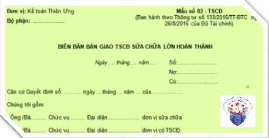

Mẫu Biên bản bàn giao TSCĐ sửa chữa lớn hoàn thành theo Thông tư 200 và 133 - Mẫu 03-TSCĐ, Biên bản bàn giao Tài sản cố định sửa chữa lớn nhằm xác nhận việc bàn giao TSCĐ sau khi hoàn thành việc sửa chữa lớn giữa bên có TSCĐ sửa chữa và bên thực hiện việc sửa chữa. Là căn cứ ghi sổ kế toán và thanh toán chi phí sửa chữa TSCĐ.
1. Mẫu Biên bản bàn giao TSCĐ sửa chữa theo Thông tư 133
|
Căn cứ Quyết định số: ………. ngày ... tháng ... năm ... của……………… Chúng tôi gồm: - Ông /Bà……… Chức vụ……… Đại diện……………… đơn vị sửa chữa - Ông /Bà……… Chức vụ……… Đại diện……………… đơn vị có TSCĐ. Đã kiểm nhận việc sửa chữa TSCĐ như sau: - Tên, ký mã hiệu, quy cách (cấp hạng) TSCĐ……………………………………………… - Số hiệu TSCĐ ……………………….. Số thẻ TSCĐ: …………………………………… - Bộ phận quản lý, sử dụng: ………………………………………………………………… - Thời gian sửa chữa từ ngày…… tháng…… năm…… đến ngày…… tháng..…. năm…… Các bộ phận sửa chữa gồm có: Kết luận: ……………………………………………………………………………………………… …………………………………………………………………………………………. |
Tải mẫu Biên bản bàn giao TSCĐ sửa chữa theo Thông tư 133:
2. Mẫu Biên bản bàn giao TSCĐ sửa chữa theo Thông tư 200:
BIÊN BẢN BÀN GIAO TSCĐ
SỬA CHỮA LỚN HOÀN THÀNH
Căn cứ Quyết định số: ................... ngày ... tháng ... năm ... của .......................... Chúng tôi gồm: - Ông /Bà .....................Chức vụ............. Đại diện ............................ đơn vị sửa chữa - Ông /Bà .....................Chức vụ............. Đại diện ............................. đơn vị có TSCĐ. Đã kiểm nhận việc sửa chữa TSCĐ như sau: - Tên, ký mã hiệu, quy cách (cấp hạng) TSCĐ ................... ...................................... - Số hiệu TSCĐ .............................................. Số thẻ TSCĐ: ...................................... - Bộ phận quản lý, sử dụng: .......................................................................................... - Thời gian sửa chữa từ ngày ..... tháng.... năm ...... đến ngày ..... tháng .... năm ......... Các bộ phận sửa chữa gồm có:
Kết luận: ....................................................................................................................... ....................................................................................................................
|
Tải mẫu Biên bản bàn giao TSCĐ sửa chữa theo Thông tư 200:
Trường hợp các bạn không tải về được thì có thể làm theo cách sau:
Bước 1: Để lại mail ở phần bình luận bên dưới
Bước 2: Gửi yêu cầu vào mail: ketoandieutam@gmail.com (Tiêu đề ghi rõ Mẫu chứng từ muốn tải)
II. Cách lập Biên bản bàn giao TSCĐ sửa chữa lớn hoàn thành:
Góc trên bên trái của Biên bản bàn giao TSCĐ sửa chữa lớn hoàn thành ghi rõ tên đơn vị (hoặc đóng dấu đơn vị), bộ phận sử dụng. Khi có TSCĐ sửa chữa lớn hoàn thành phải tiến hành lập Ban giao nhận gồm đại diện bên thực hiện việc sửa chữa và đại diện bên có TSCĐ sửa chữa.
Biên bản bàn giao TSCĐ sửa chữa lớn hoàn thành gồm 2 phần chính:
1 - Ghi tên, ký hiệu, số hiệu TSCĐ sửa chữa.
Nơi quản lý sử dụng TSCĐ và ghi rõ thời gian bắt đầu sửa chữa và hoàn thành việc sửa chữa TSCĐ.
2 - Các bộ phận sửa chữa.
Cột A: Ghi rõ tên của bộ phận cần phải sửa chữa của TSCĐ.
Cột B: Ghi nội dung (Mức độ) của công việc sửa chữa như: Thay thế mới hoặc sửa chữa, tân trang lại v.v...
Cột 1: Ghi giá dự toán (Giá kế hoạch) (Đối với trường hợp đơn vị tự làm) hoặc giá hợp đồng hai bên đã thỏa thuận (Đối với trường hợp thuê ngoài) của từng bộ phận cần sửa chữa.
Cột 2: Ghi số chi phí thực tế đã chi cho từng bộ phận sửa chữa (Đối với trường hợp đơn vị tự sửa chữa).
Đối với trường hợp thuê ngoài sửa chữa thì chỉ ghi vào cột này khi có sự thay đổi về giá cả (So với giá ghi theo hợp đồng) phát sinh trong quá trình sửa chữa được bên có TSCĐ sửa chữa chấp nhận thanh toán.
Cột 3: Ghi rõ kết quả kiểm tra của từng bộ phận sau khi đã sửa chữa xong.
- Kết luận: Ghi ý kiến nhận xét tổng thể về việc sửa chữa lớn TSCĐ của Hội đồng giao nhận.
Biên bản giao nhận TSCĐ sửa chữa lớn hoàn thành lập thành 2 bản, đại diện đơn vị hai bên giao, nhận cùng ký và mỗi bên giữ một bản, sau đó chuyển cho kế toán trưởng của đơn vị có TSCĐ sửa chữa, soát xét xong lưu tại phòng kế toán.
Xem thêm: Bảng tính phân bổ khấu hao TSCĐ
--------------------------------------------------------------------------
CÔNG TY TNHH TƯ VẤN & ĐÀO TẠO DIỆU TÂM Chuyên Tư Vấn Quản Trị Doanh Nghiệp & Đào Tạo Kế Toán Thực Chiến
Website: ketoandieutam.vn 
---------------------------------------------------